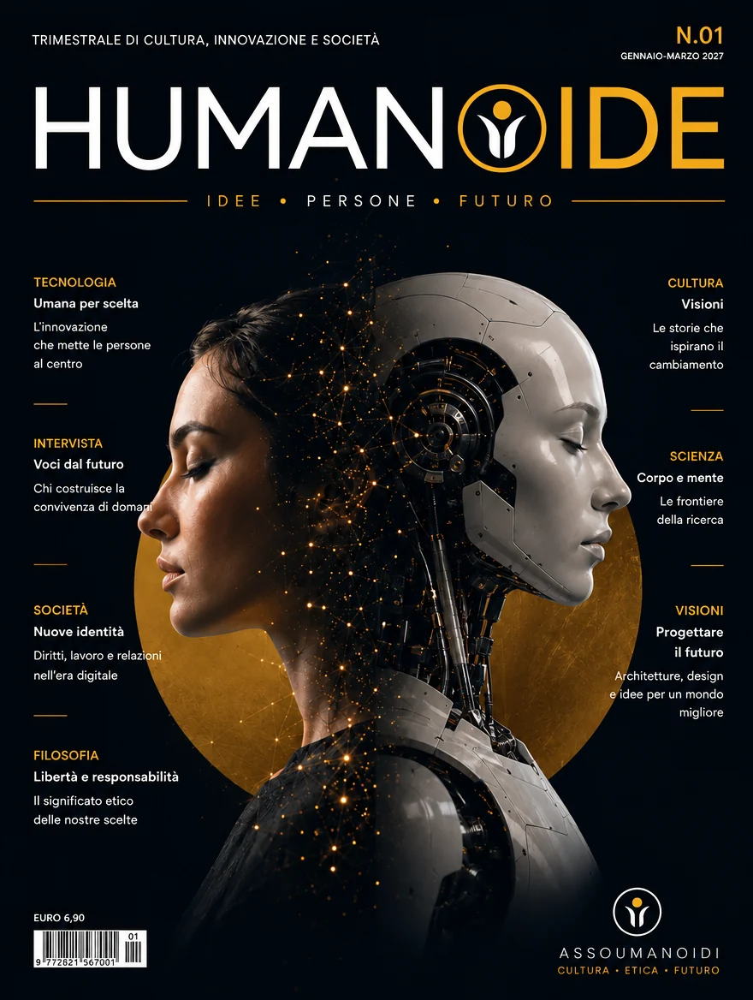

Trimestrale di cultura, innovazione e societàQuarterly of culture, innovation and society
Idee.
Persone.
Futuro.
Ideas.
People.
Future.
Humanoide è la rivista di AssoUmanoidi: storie, idee e progetti per capire oggi e costruire il futuro. Quattro numeri l'anno su tecnologia, società, scienza e filosofia della convivenza tra esseri umani e umanoidi. Humanoide is the magazine of AssoUmanoidi: stories, ideas and projects to understand today and build the future. Four issues a year on technology, society, science and the philosophy of coexistence between humans and humanoids.
- N.01 · gennaio–marzo 2027January–March 2027
- In uscita a dicembre 2026Out in December 2026
- Online First

Il modello Online FirstThe Online First model
Prima l'articolo, poi il fascicolo. First the article, then the issue.
-
Anteprima Online FirstOnline First preview
Ogni articolo esce prima su questo sito, con la data di pubblicazione. Alcune anteprime sono ad accesso aperto, altre riservate agli abbonati. Each article appears first on this site, with its publication date. Some previews are open access, others are reserved for subscribers.
-
Il fascicolo trimestraleThe quarterly issue
Ogni tre mesi un PDF raccoglie gli articoli: è la Version of Record, l'edizione ufficiale e definitiva. Per chi legge è ad accesso libero. Every three months a PDF gathers the articles: it is the Version of Record, the official and definitive edition. It is free for readers.
-
In più lingueIn several languages
La rivista è multilingue, con traduzione automatica tramite intelligenza artificiale sulla piattaforma Speaqi. L'originale resta disponibile e prevale in caso di discrepanze. The journal is multilingual, with automatic AI translation on the Speaqi platform. The original remains available and prevails in case of discrepancies.
ArticoliArticles
Il primo articolo è in preparazione. The first article is in the making.
Gli articoli saranno pubblicati qui in anteprima Online First, prima del fascicolo trimestrale. Articles will be published here in Online First preview, ahead of the quarterly issue.
Iscriviti per restare aggiornatoSubscribe to stay updatedChi fa la rivistaWho makes the journal
Direzione Editorial board
- Direttore editorialeEditorial DirectorMassimo Morgante
- Direttore responsabileEditor-in-ChiefMarco Marsili
- Direttore scientificoScientific DirectorMarco Marsili
- Vicedirettore vicarioDeputy Editor-in-ChiefFabio Morotti
- Vicedirettore responsabile comunicazione e progetti specialiDeputy Editor for Communications and Special ProjectsGabriele Gobbo
Consiglio scientificoScientific Council
Studiosi di etica, diritto, robotica e scienze sociali. Scholars of ethics, law, robotics and the social sciences.
Presieduto dal Direttore scientifico, il Consiglio scientifico accompagna la rivista. Chaired by the Scientific Director, the Scientific Council supports the journal.
- Direttore scientificoScientific Director
Marco Marsili
CEI-Iscte, LisbonaCEI-Iscte, Lisbon
Carla Petrocelli
Università di Bari Aldo Moro · Storia della scienza e delle tecnicheUniversity of Bari Aldo Moro · History of Science and Techniques
Dorota Domalewska
War Studies University, Varsavia · Scuola di dottoratoWar Studies University, Warsaw · Doctoral School
István Polgár
Università di Oradea, Romania · Relazioni internazionali e studi europeiUniversity of Oradea, Romania · International Relations and European Studies
Jesús Ignacio Delgado Rojas
Università di Siviglia · Filosofia del dirittoUniversity of Seville · Philosophy of Law
Małgorzata Kamola-Cieślik
Università di Szczecin · Sistemi politici e politiche pubblicheUniversity of Szczecin · Political Systems and Public Policy
Marek Górka
Koszalin University of Technology · Facoltà di Scienze umanisticheKoszalin University of Technology · Faculty of Humanities
Özgür Tüfekçi
Karadeniz Technical University, Trebisonda · Relazioni internazionaliKaradeniz Technical University, Trabzon · International Relations
Rahman Dağ
Marmara University · Scienze politiche e relazioni internazionaliMarmara University · Political Science and International Relations
Rashed Daher
Centro per il mondo arabo contemporaneo, ELTE, BudapestCenter for the Contemporary Arab World, ELTE, Budapest
Suggerimenti e proposteSuggestions and proposals
Scrivi per Humanoide. Write for Humanoide.
Hai una storia, una ricerca o un'idea da proporre alla rivista? Leggi le norme per gli autori e inviaci la tua proposta. Do you have a story, a piece of research or an idea to propose to the magazine? Read the author guidelines and send us your proposal.
AssoUmanoidiAssoUmanoidi
Il futuro della convivenza si legge insieme. The future of coexistence is read together.
La rivista è un progetto di AssoUmanoidi. Iscrivendoti all'associazione ricevi il numero trimestrale e le novità sulla rivista. The magazine is a project of AssoUmanoidi. By joining the association you receive the quarterly issue and news about the journal.
Si apre il modulo di iscrizione all'associazione, sul sito di AssoUmanoidi.This opens the association's membership form on the AssoUmanoidi website.